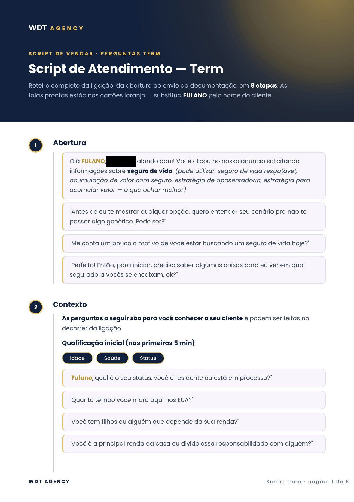
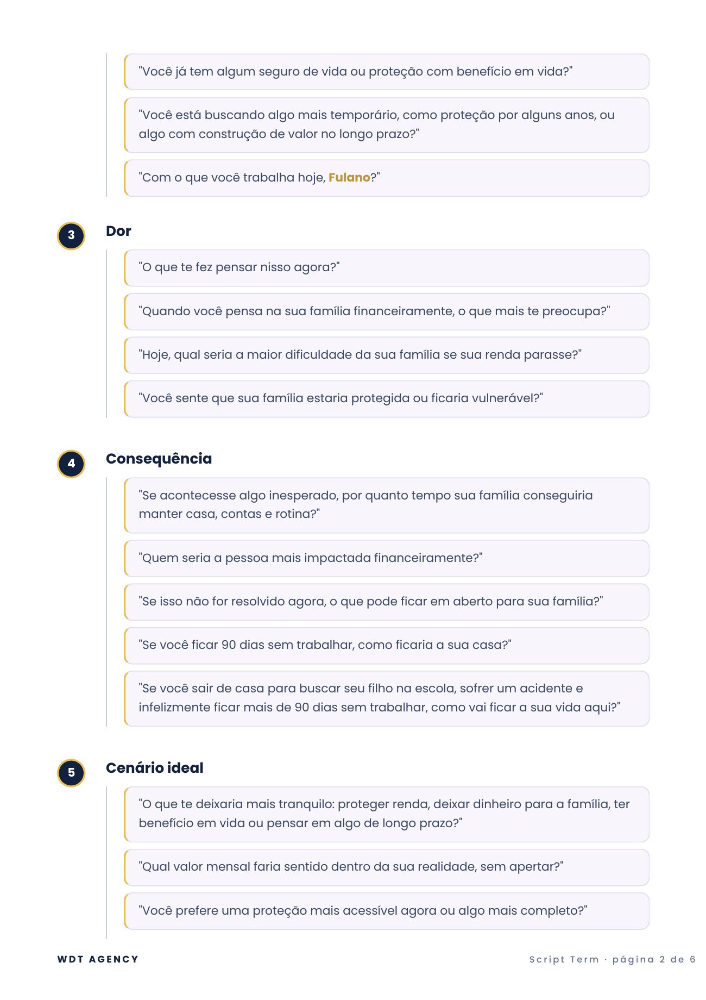
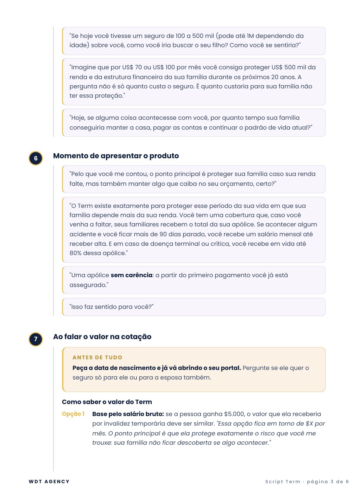
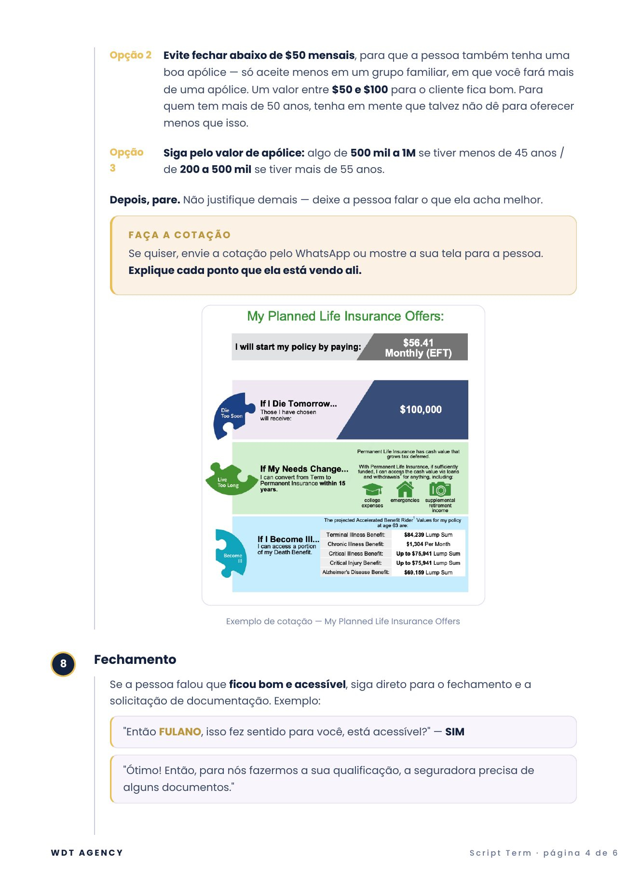
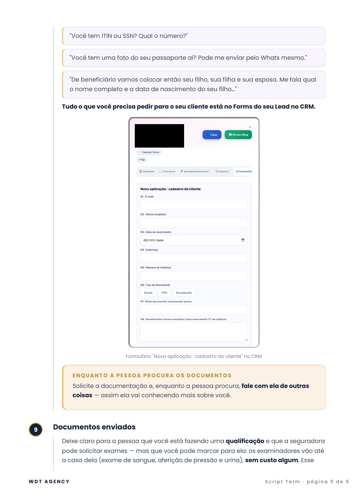
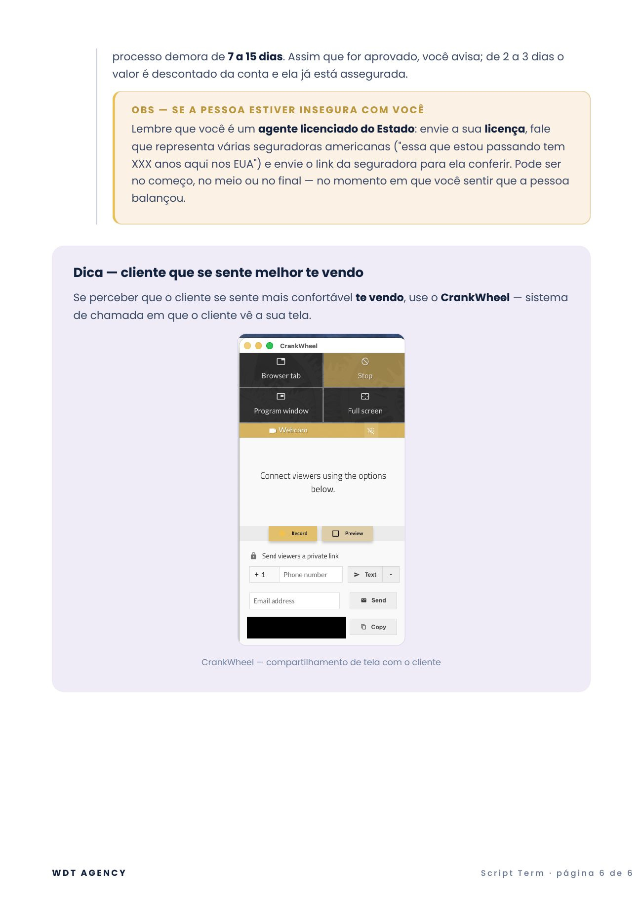

← Voltar ao portal
WDT
AGENCY
Script de atendimento Term
Roteiro completo da ligação em 9 etapas, da abertura ao envio da documentação. As falas prontas estão nos cartões destacados; substitua FULANO pelo nome do cliente.
⬇ Baixar PDF





